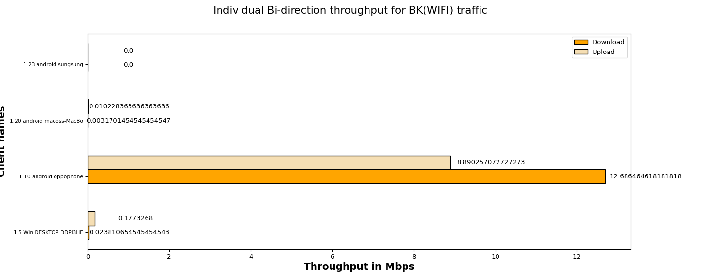
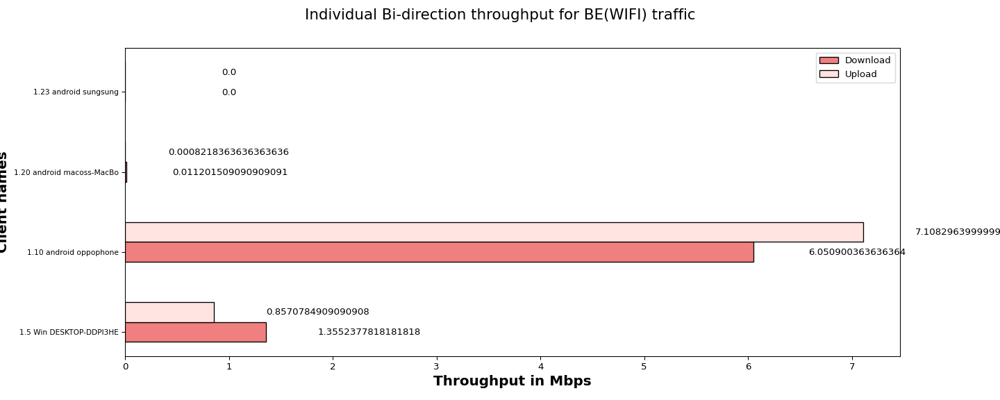
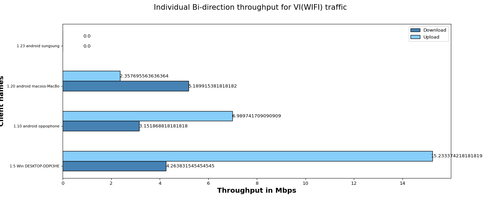
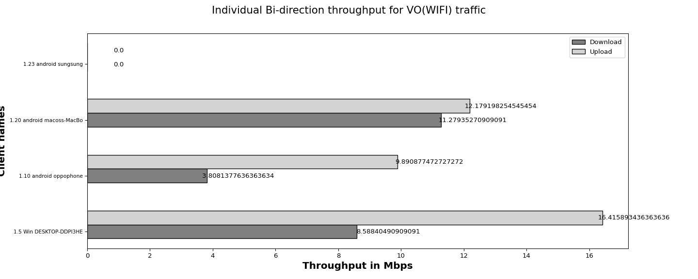

The objective of the QoS (Quality of Service) traffic throughput test is to measure the maximum achievable throughput of a network under specific QoS settings and conditions.By conducting this test, we aim to assess the capacity of network to handle high volumes of traffic while maintaining acceptable performance levels,ensuring that the network meets the required QoS standards and can adequately support the expected user demands.
| Test Configuration |
|
||||||||||||||||||||||||||||||||||||||||
| No of Stations | Throughput for Load 100.0 Mbps-upload | Throughput for Load 100.0 Mbps-download |
|---|---|---|
| 4 | BK : 9.08, BE : 7.97, VI: 24.58, VO: 38.49 | BK : 12.71, BE : 7.42, VI: 12.61, VO: 23.68 |
The below graph represents overall Bi-direction throughput for all connected stations running BK, BE, VO, VI traffic with different intended loadsUpload:100.0 Mbps,Download:100.0 Mbps per tos

The below graph represents individual throughput for 4 clients running BK (WiFi) traffic. X- axis shows “Throughput in Mbps” and Y-axis shows “number of clients”.

| Client Name | MAC | SSID | Type of traffic | Offered upload rate | Offered download rate | Observed average upload rate | Observed average download rate | Observed Upload Drop (%) | Observed Download Drop (%) |
|---|---|---|---|---|---|---|---|---|---|
| 1.5 Win DESKTOP-DDPI3HE | e4:a4:71:93:70:e7 | NETGEAR_2G_wpa2 | Background | 100.0 Mbps | 100.0 Mbps | 0.1773268 Mbps | 0.023810654545454543 Mbps | 25.275179 | 77.854545 |
| 1.10 android oppophone | e6:5b:3a:c3:48:ed | NETGEAR_2G_Open | Background | 100.0 Mbps | 100.0 Mbps | 8.890257072727273 Mbps | 12.686464618181818 Mbps | 3.976179 | 40.047656 |
| 1.20 android macoss-MacBo | 30:35:ad:c5:e1:be | NETGEAR_2G_wpa2 | Background | 100.0 Mbps | 100.0 Mbps | 0.010228363636363636 Mbps | 0.0031701454545454547 Mbps | 99.943182 | 98.181818 |
| 1.23 android sungsung | 46:ca:12:8c:58:67 | NETGEAR_2G_wpa2 | Background | 100.0 Mbps | 100.0 Mbps | 0.0 Mbps | 0.0 Mbps | 0.000000 | 0.000000 |
The below graph represents individual throughput for 4 clients running BE (WiFi) traffic. X- axis shows “number of clients” and Y-axis shows “Throughput in Mbps”.

| Client Name | MAC | SSID | Type of traffic | Offered upload rate | Offered download rate | Observed average upload rate | Observed average download rate | Observed Upload Drop (%) | Observed Download Drop (%) |
|---|---|---|---|---|---|---|---|---|---|
| 1.5 Win DESKTOP-DDPI3HE | e4:a4:71:93:70:e7 | NETGEAR_2G_wpa2 | Besteffort | 100.0 Mbps | 100.0 Mbps | 0.8570784909090908 Mbps | 1.3552377818181818 Mbps | 5.213002 | 37.496182 |
| 1.10 android oppophone | e6:5b:3a:c3:48:ed | NETGEAR_2G_Open | Besteffort | 100.0 Mbps | 100.0 Mbps | 7.1082963999999995 Mbps | 6.050900363636364 Mbps | 2.717970 | 39.460035 |
| 1.20 android macoss-MacBo | 30:35:ad:c5:e1:be | NETGEAR_2G_wpa2 | Besteffort | 100.0 Mbps | 100.0 Mbps | 0.0008218363636363636 Mbps | 0.011201509090909091 Mbps | 87.272727 | 83.636364 |
| 1.23 android sungsung | 46:ca:12:8c:58:67 | NETGEAR_2G_wpa2 | Besteffort | 100.0 Mbps | 100.0 Mbps | 0.0 Mbps | 0.0 Mbps | 0.000000 | 0.000000 |
The below graph represents individual throughput for 4 clients running VI (WiFi) traffic. X- axis shows “number of clients” and Y-axis shows “Throughput in Mbps”.

| Client Name | MAC | SSID | Type of traffic | Offered upload rate | Offered download rate | Observed average upload rate | Observed average download rate | Observed Upload Drop (%) | Observed Download Drop (%) |
|---|---|---|---|---|---|---|---|---|---|
| 1.5 Win DESKTOP-DDPI3HE | e4:a4:71:93:70:e7 | NETGEAR_2G_wpa2 | Video | 100.0 Mbps | 100.0 Mbps | 15.233374218181819 Mbps | 4.263831545454545 Mbps | 0.102040 | 8.481573 |
| 1.10 android oppophone | e6:5b:3a:c3:48:ed | NETGEAR_2G_Open | Video | 100.0 Mbps | 100.0 Mbps | 6.989741709090909 Mbps | 3.151868818181818 Mbps | 0.138014 | 47.166101 |
| 1.20 android macoss-MacBo | 30:35:ad:c5:e1:be | NETGEAR_2G_wpa2 | Video | 100.0 Mbps | 100.0 Mbps | 2.357695563636364 Mbps | 5.189915381818182 Mbps | 0.579257 | 11.644143 |
| 1.23 android sungsung | 46:ca:12:8c:58:67 | NETGEAR_2G_wpa2 | Video | 100.0 Mbps | 100.0 Mbps | 0.0 Mbps | 0.0 Mbps | 0.000000 | 0.000000 |
The below graph represents individual throughput for 4 clients running VO (WiFi) traffic. X- axis shows “number of clients” and Y-axis shows “Throughput in Mbps”.

| Client Name | MAC | SSID | Type of traffic | Offered upload rate | Offered download rate | Observed average upload rate | Observed average download rate | Observed Upload Drop (%) | Observed Download Drop (%) |
|---|---|---|---|---|---|---|---|---|---|
| 1.5 Win DESKTOP-DDPI3HE | e4:a4:71:93:70:e7 | NETGEAR_2G_wpa2 | Voice | 100.0 Mbps | 100.0 Mbps | 16.415893436363636 Mbps | 8.58840490909091 Mbps | 0.213221 | 7.214951 |
| 1.10 android oppophone | e6:5b:3a:c3:48:ed | NETGEAR_2G_Open | Voice | 100.0 Mbps | 100.0 Mbps | 9.890877472727272 Mbps | 3.8081377636363634 Mbps | 4.467763 | 44.555710 |
| 1.20 android macoss-MacBo | 30:35:ad:c5:e1:be | NETGEAR_2G_wpa2 | Voice | 100.0 Mbps | 100.0 Mbps | 12.179198254545454 Mbps | 11.27935270909091 Mbps | 1.630540 | 12.184148 |
| 1.23 android sungsung | 46:ca:12:8c:58:67 | NETGEAR_2G_wpa2 | Voice | 100.0 Mbps | 100.0 Mbps | 0.0 Mbps | 0.0 Mbps | 0.000000 | 0.000000 |
| Information |
|
||||